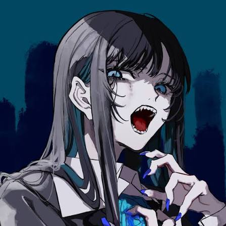
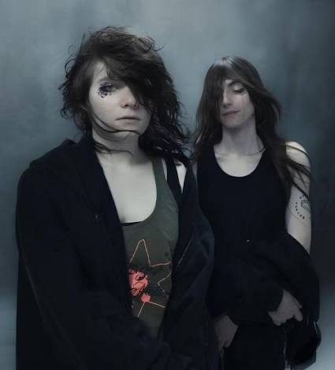

Festival Musical 2026
El evento musical más esperado del año
Comprar EntradasArtistas Destacados

Ado
J-Pop / Rock Alternativo
Cantante japonesa reconocida mundialmente por éxitos como "Usseewa", "Odo" y "Show", famosa por sus presentaciones en estadios con silueta iluminada.
Kikuo
Electrónica / Vocaloid
Productor y compositor japonés pionero del sonido experimental con Hatsune Miku, creador de temas icónicos como "Aishite Aishite Aishite".

Femtanyl
Digital Hardcore / Breakcore
Proyecto musical canadiense de electrónica intensa y ritmos acelerados que destaca en la escena underground internacional y giras por Norteamérica y Europa.